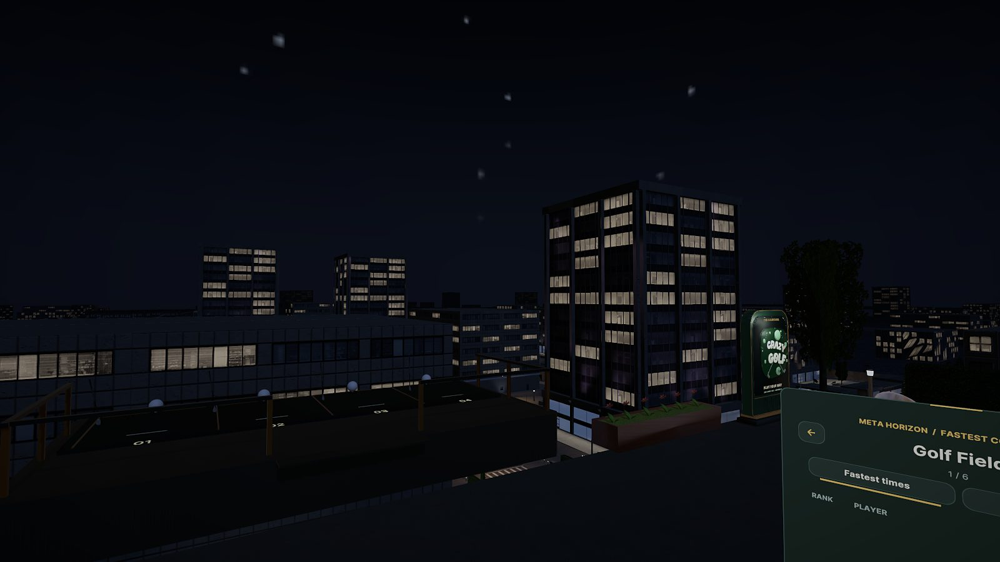
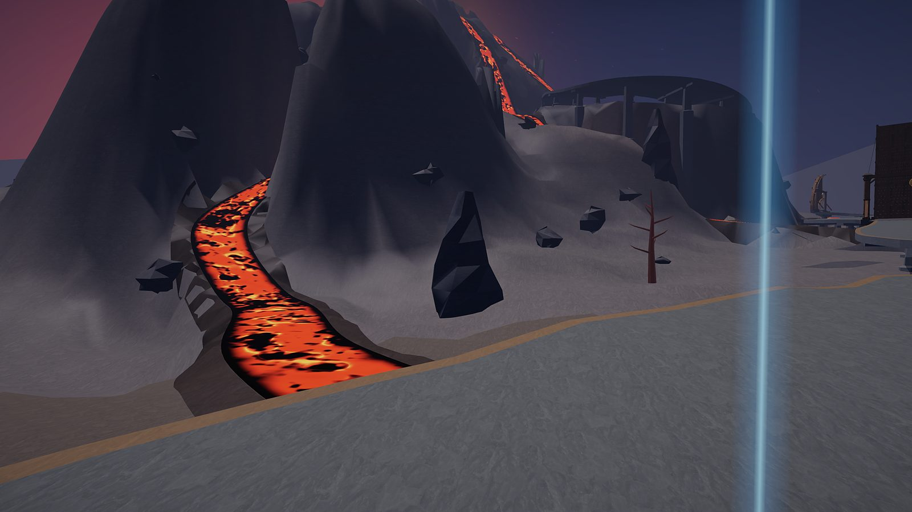
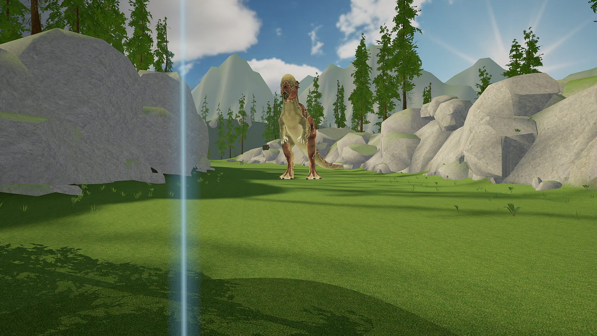
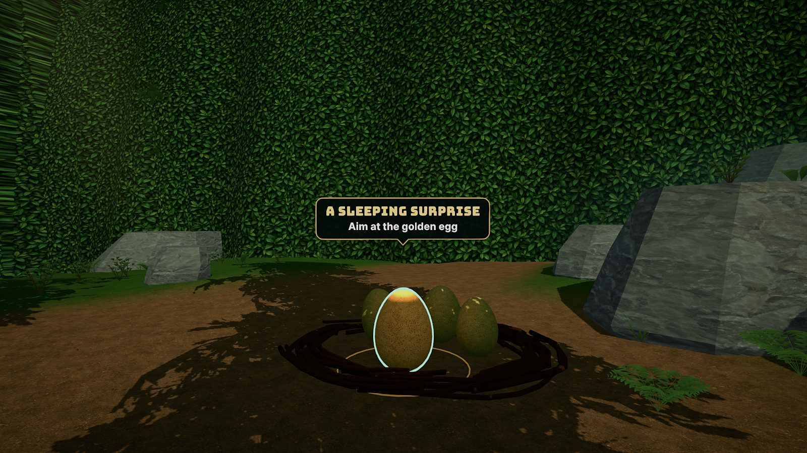
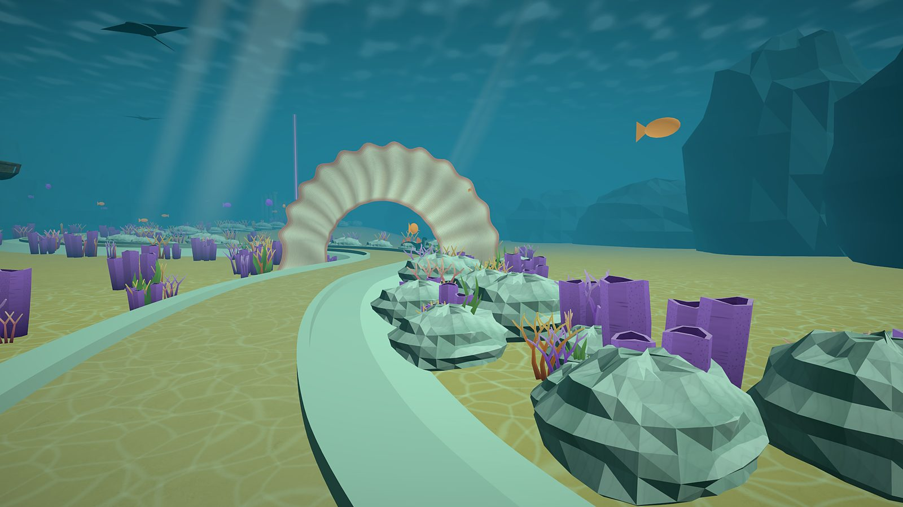
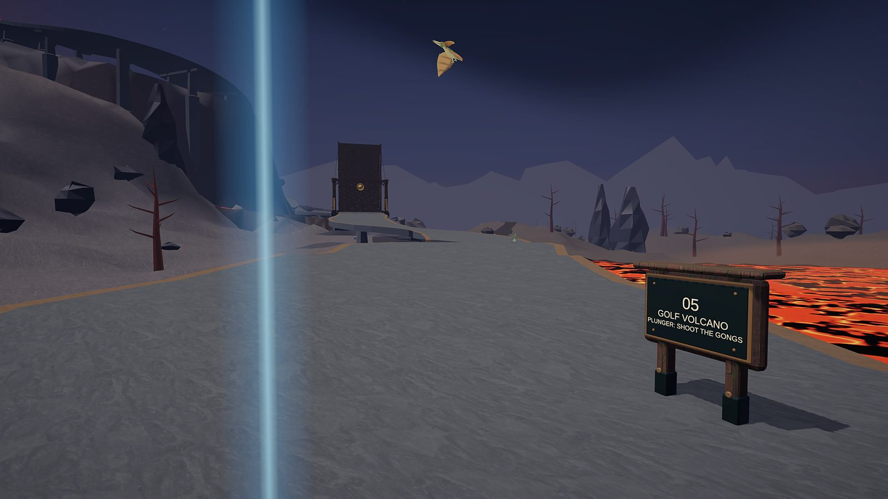
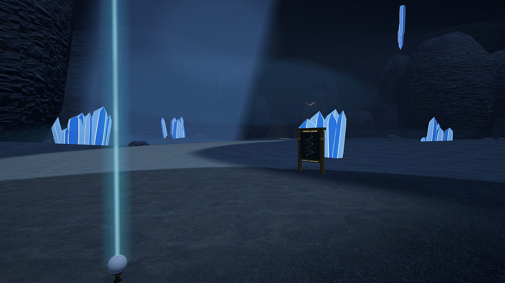

Mini-golf with dinosaurs, lava, and a race against the clock.
Crazy Golf VR sends you from a hidden jungle glade to a sunken reef, through crystal caverns and across a volcano. Strokes don't count here — the clock does. Grab a club, find the hole, and set a time your friends have to beat.
- Six courses Forest, mountains, caverns, a volcano, and a reef — plus a tutorial glade.
- Race the clock Unlimited strokes. Your time goes on the Meta Horizon leaderboards.
- Play together Solo, co-op for two to four, or two-versus-two.

The Sunken Sanctuary, from the current build of Crazy Golf VR.

Six courses, one clock
Every course is a hole you race to. Tee off, chase the ball as far as it takes, and sink it as fast as you can — the par is there for fun, not for scoring. Beat your own best time, then go after the world record.
- Your time is the score — strokes are unlimited.
- Personal bests and world ranks on the Meta Horizon leaderboards.
- Forest river, alpine boulders, caverns, lava and reef.
Why you'll love Crazy Golf VR
A tutorial with a twist
Wake a golden egg to earn your first club, part the hedge, and follow a dinosaur guide to the shrine where the plunger gun is waiting.
Dinosaurs on the fairway
Raptors guard the greens and pterodactyls circle overhead. Drive them off with your plunger, ring the gongs, and keep your ball moving.
Clear, calm guidance
A light beacon marks your ball, and a compact heads-up display shows your time, the time to beat, and how far you are from the cup.

Meet on the rooftop. Tee off together.
Gather friends in the city rooftop or the grassy field, pick a course, and head out as a team. In co-op, two to four players share one ball — anyone can take the next shot. In two-versus-two, each team gets its own ball and the first team to sink it wins.
- Shaped by 60,000+ installs Every honest review fed the rebuild — the swing, the guidance, the audio, and now the campaign.
- Made for all ages Kids and grown-ups share the green, with age-appropriate, safety-first multiplayer.
- No penalties, no pressure Lose your ball and it comes back to its last safe spot. The race goes on.
Inside the courses





